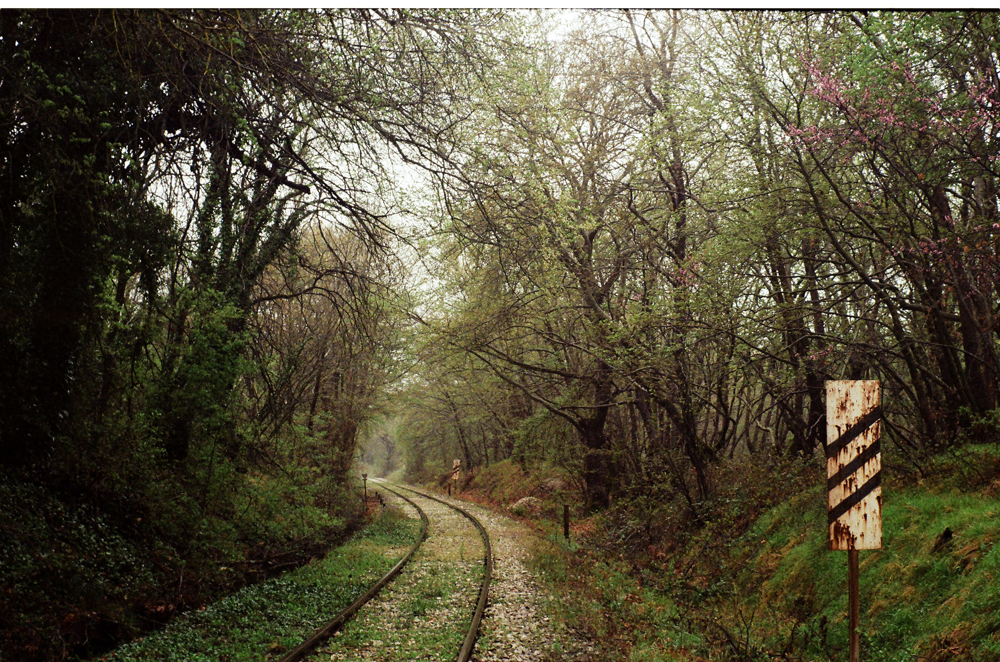
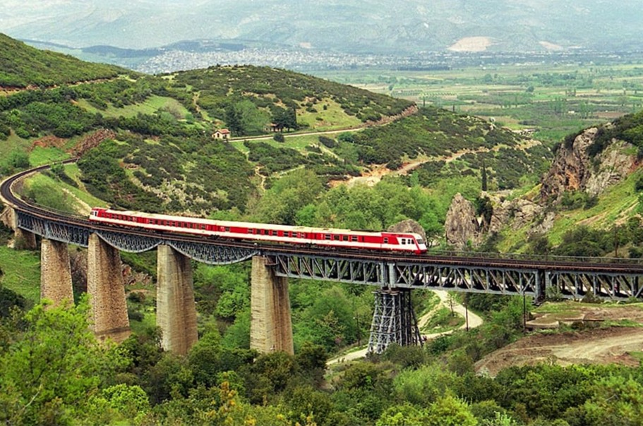
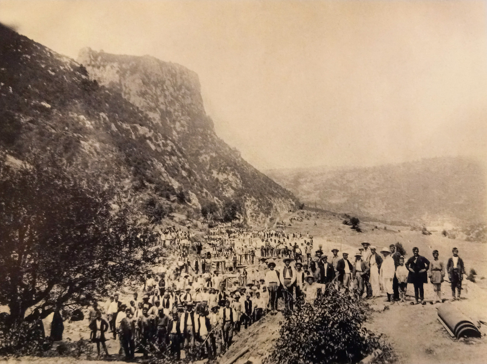
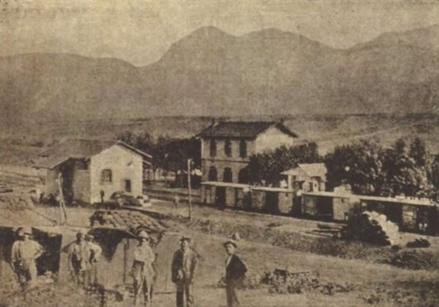
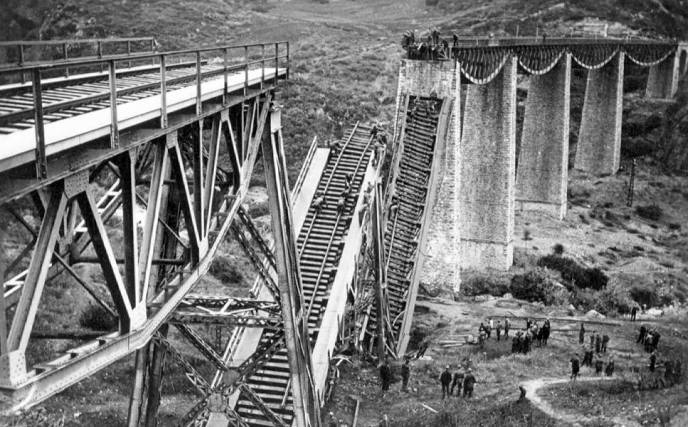
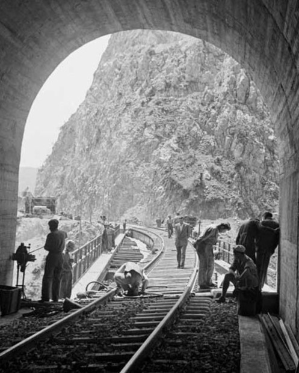
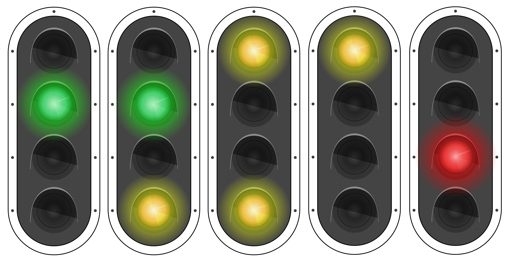
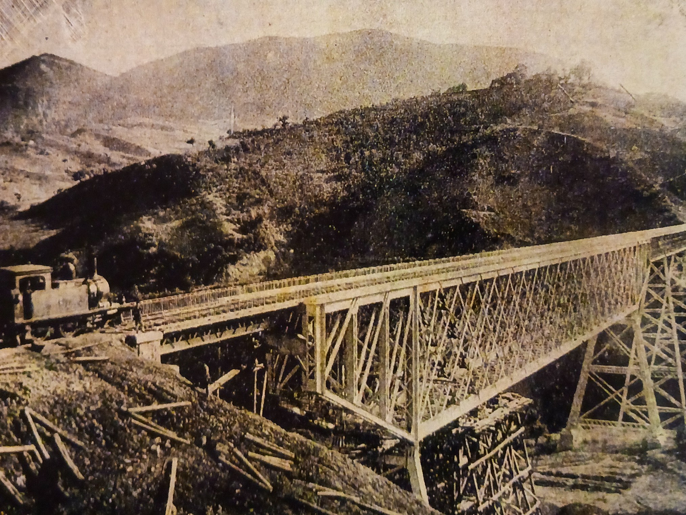
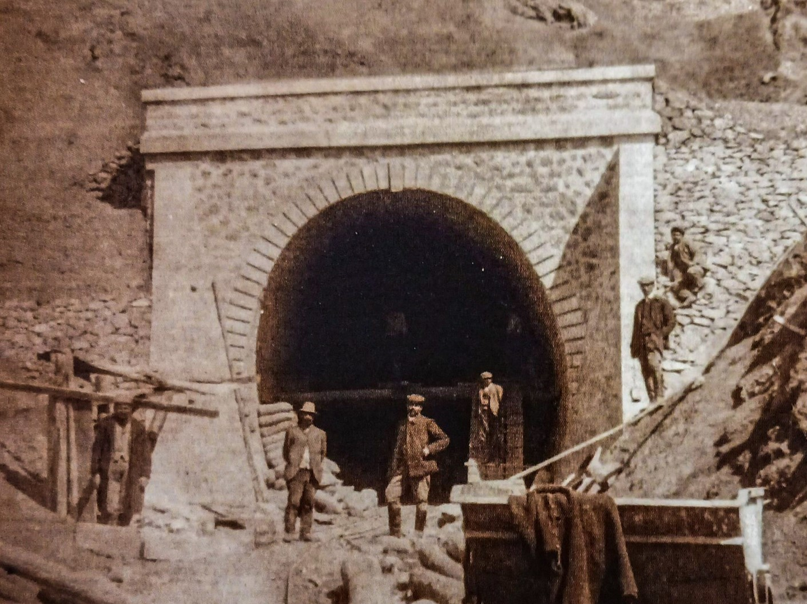

Μηχανική Αριστεία
Γέφυρες, σήραγγες και απαιτητικά τεχνικά έργα.

Εκεί που η μηχανική, η ιστορία και η φύση συναντιούνται.
Where engineering, history and nature meet.
Το Σιδηροδρομικό Πέρασμα του Μπράλου, επίσης γνωστό ως Ορεινό, είναι μια μαγευτική σιδηροδρομική διαδρομή στην Στερεά Ελλάδα, που εκτείνεται ανάμεσα στους Δήμους Αμφίκλειας - Ελάτειας, Δελφών και Λαμιέων. Θεωρείται μία από τις πιο εντυπωσιακές σιδηροδρομικές γραμμές στην Ελλάδα, μαζί με άλλα διάσημα τμήματα όπως τα στενά του Νέστου, το τραινάκι του Πηλίου, τον Οδοντωτό και το δίκτυο της Πελοποννήσου. Το Πέρασμα αποτελεί μέρος της αρχικής σιδηροδρομικής γραμμής Αθηνών - Θεσσαλονίκης και έχει μήκος 56,241 χιλιόμετρα. Στις αρχές του 2018, διακόπηκε η λειτουργία του ως κομμάτι του κύριου σιδηροδρομικού άξονα, καθώς αντικαταστάθηκε από μια νέα, γειτονική και βορειότερη γραμμή υψηλών ταχυτήτων.
A railway journey through landscapes shaped by engineering, history and time.
Μάθετε περισσότερα →Γέφυρες, σήραγγες και απαιτητικά τεχνικά έργα.
Βουνά, χαράδρες και μοναδικά τοπία.
Ένα ταξίδι στην ιστορία της Ελλάδας.
Αρχεία, μαρτυρίες και τοπικές ιστορίες.
Ανακαλύψτε τον τόπο με τον δικό σας ρυθμό.
Σεβασμός στο τοπίο και την κληρονομιά.

Η διαδρομή ξεκινά από τον Σταθμό της Τιθορέας, με θέα τον Παρνασσό και το Καλλίδρομο, συνεχίζει μέσω της Αμφίκλειας και της εύφορης πεδιάδας του Βοιωτικού Κηφισού, περνώντας από τους σταθμούς της Λιλαίας και του Μπράλου. Από εκεί αρχίζει η εντυπωσιακή ορεινή χάραξη, με σήραγγες, κοιλαδογέφυρες και απόκρημνα φαράγγια, διασχίζοντας τις πλαγιές της Οίτης και το ιστορικό πέρασμα της Τραχίνας. Η πανοραμική θέα προς την πεδιάδα της Λαμίας και τον Μαλιακό Κόλπο συνοδεύει τον ταξιδιώτη έως τη γέφυρα του Γοργοποτάμου, πριν η γραμμή διασχίσει την κοιλάδα του Σπερχειού και καταλήξει στον Σταθμό του Λειανοκλαδίου.
Εξερευνήστε τον Χάρτη →Το Πέρασμα αποτέλεσε κομβικό σημείο της σύγχρονης ελληνικής ιστορίας, συμβάλλοντας στην ανάπτυξη της βιομηχανίας, της γεωργίας, του εμπορίου και των μεταφορών. Η κατασκευή του αντιμετώπισε σημαντικές τεχνικές προκλήσεις λόγω της δύσβατης μορφολογίας της περιοχής. Παράλληλα, διαδραμάτισε στρατηγικό ρόλο στους δύο Παγκόσμιους Πολέμους, εξυπηρετώντας τη μεταφορά συμμαχικών και ελληνικών στρατευμάτων, ενώ αποτέλεσε στόχο αντιστασιακών ενεργειών κατά την Κατοχή. Μεταπολεμικά, συνέβαλε καθοριστικά στην αποκατάσταση του σιδηροδρομικού δικτύου και την ανασυγκρότηση της χώρας.


Η στρατηγική σημασία της γραμμής και τα γεγονότα της εποχής.
Ανακαλύψτε →


.jpg)
Εξερευνήστε τα τεχνικά έργα και την υποδομή που διαμόρφωσαν τη σιδηροδρομική διέλευση.

Λιθόκτιστες και μεταλλικές κατασκευές, αρχιτεκτονική και τεχνικές λεπτομέρειες.
Ανακαλύψτε →
Η διάνοιξη μέσα από το ορεινό ανάγλυφο και οι προκλήσεις της κατασκευής.
Ανακαλύψτε →.jpg)
Ιστορικά κτίρια, σιδηροδρομικοί κόμβοι και μικρές στάσεις.
Ανακαλύψτε →Ένας ενιαίος ψηφιακός χάρτης θα συγκεντρώνει τη διαδρομή, τα σημεία ενδιαφέροντος και το υψομετρικό προφίλ.
Ο διαδραστικός χάρτης και οι ιστορικές παραλλαγές της διαδρομής θα προστεθούν σε επόμενη έκδοση.
Μελλοντικές Προσθήκες ↗Μια επιμελημένη ψηφιακή βιβλιοθήκη με βιβλιογραφία, αρχειακό υλικό και δημοσιεύσεις.
Μελέτες και εκδόσεις για την ελληνική σιδηροδρομική ιστορία.
Έγγραφα, φωτογραφίες, χάρτες και ιστορικές μαρτυρίες.
Σύγχρονες εργασίες και τεχνικές μελέτες.
Για ιστορικές πληροφορίες, ερευνητικές συνεργασίες, περιηγήσεις ή συνεισφορά αρχειακού υλικού, επικοινωνήστε μαζί μας.
Η διεύθυνση είναι ενδεικτική και πρέπει να αντικατασταθεί με το επίσημο email.